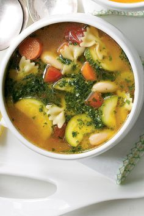

Ingredients
Here are the ingredients to prepare vegetable soup.
2 carrots
1 leek
2 potatoes
1 onion
1 liter of vegetable broth
Salt and pepper
Steps

Steps
Follow these steps to prepare your dish.
Peel and dice all the vegetables.
In a pot, sauté the onion in a little olive oil.
Add the other vegetables and sauté for a few minutes.
Pour in the vegetable broth and let it simmer for 20 minutes.
Blend the soup and season with salt and pepper.